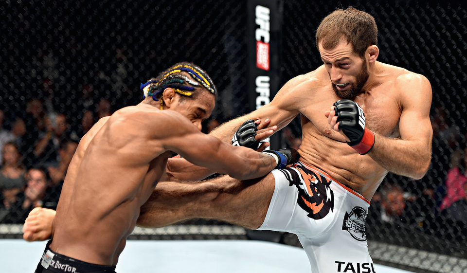

ММА - боевые искусства, представляющие собой сочетание множества техник, школ и направлений единоборств. ММА являются полноконтактным боем с применением ударной техники и борьбы как в стойке (клинч), так и на полу (партер).

История возникновения ММА.
Ещё в 648 г. до н. э. древние греки соревновались на античных олимпийских играх в Панкратионе – единоборстве, по своей форме и правилам напоминавшем современное ММА. В дальнейшем панкратион трансформировался в более жестокий этрусканский и древнеримский «панкратиум». В таком стиле бои проводились даже в Коллизее и нередко схватки заканчивались смертью бойцов. Самые выдающиеся из них были удостоены статуями, которые были установлены на всеобщее обозрение. После упадка Римской империи, смешанные единоборства растворились в национальных боевых направлениях и начинают выходить на арену в конце 19 века, когда, для развлечения публики, стали популярны поединки между представителями различных школ боевых искусств. Боксёр против каратиста или мастер джиу-джитсу против дзюдоиста – такое зрелище нередко можно было увидеть на цирковых аренах Европы и Азии, на рубеже 19 и 20 веков. После I мировой войны смешанные единоборства предстают в 2х направлениях:
В 60-х годах идея совмещение стилей развивалось известным мастером и киноактёром, американцем китайского происхождения, Брюсом Ли. Его система Джит Кун До обьединила в себе многие принципы и концепции боя, которые положены сейчас в основу техники и стратегии смешанного боя. Брюс Ли со своим стилем и особенно его фильмы настолько повлияли на развитие ММА, что в 2004 году Дэйна Уайт (президент UFC) назвал Брюса «отцом ММА». Конечно, ещё до Брюса Ли в Японии и Китае существовали смешанные стили ведения боя. В СССР смешанные единоборства появились вместе с боевым самбо в 20-х – 30-х годах XX столетия. Боевой раздел самбо по своей сути наиболее близок к ММА, поэтому представители боевого самбо (БС) успешно выступают по ММА на мировых и национальных аренах. Самым ярким бойцом БС является неоднократный чемпион мира Фёдор Емельяненко.
Техника ММА.
В принципе спортсмены ММА в выборе стратегии боя новизной не блещут: здесь также есть любители ударов и борьбы, но они знают, что именно противоборство в партере нередко решает исход поединка, а здесь уж стесняться не следует: кто на что горазд. Из-за запрета использования определённых приёмов и ударов спортсменам ММА, как, впрочем, и других стилей, пришлось приспосабливаться к новым условиям. Определённым выходом из ситуации стали гибридные стили, в которых доминирующая стойка или партера отсутствовала, боец использовал ограниченное количество приёмов, что позволяло ему показать себя с лучшей стороны и победить. К таким направлениям специалисты относят грязный бокс в клинче, вали-и-колоти, грэпплинг (борьба в купе с удушающими приёмами), растянись и дерись и другие. Сами названия говорят о тактике боя. Превосходство соперника в технике всегда считалось главным козырем в любом виде спорта. Если говорить о смешанных единоборствах, добиться успехов в ударной технике помогают соответствующие виды – бокс, кикбоксинг, муай тай, карате. Различные виды борьбы (вольная, греко-римская, дзюдо и самбо) незаменимы в партере. Эффективное использование болевых и удушающих приёмов также может сыграть решающую роль. Когда речь идёт о ММА, нередко вспоминают прославленного чемпиона, великолепного бойца Фёдора Емельяненко, владевшего несколькими как ударными, так и борцовскими стилями, что в конечном итоге помогало ему выходить победителем даже в самых безнадёжных ситуациях.
Экипировка ММА.
Вместо боксёрских перчаток в ММА используются накладки на руки с открытыми пальцами. Относительно боксёрских перчаток, накладки для ММА значительно тоньше: профессионалы используют 4-унциевые, а любители — 6-унциевые перчатки. Накладки были введены для защиты кулаков, снижения количества рассечений и связанных с этим остановок боев. Кроме того, накладки в какой-то степени повышают зрелищность боев, так как стимулируют бойцов использовать ударную технику. Организации ММА, как правило, требуют, чтобы из одежды на участниках были только перчатки и шорты, так как другая одежда может травмировать оппонента. Женщины выступают в шортах и спортивных бюстгальтерах.